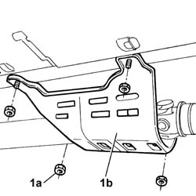
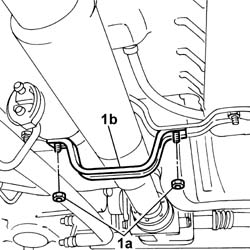
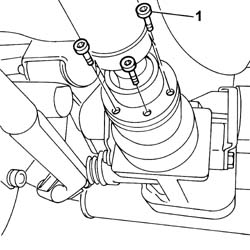
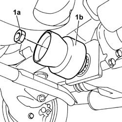

2410A52 VISCOUS JOINT BETWEEN THE TRANSMISSION SHAFTS - R.R. FOR PERMANENT VERSION
- Path
- Procedures > 24 TRANSMISSION > 2410 TRANSMISSION SHAFT > 2410A TRANSMISSION SHAFT BETWEEN THE TRANSMISSION AND THE DIFFERENTIAL > 2410A52 VISCOUS JOINT BETWEEN THE TRANSMISSION SHAFTS - R.R. FOR PERMANENT VERSION
- Kind
- repair procedure (removal / refitting; the operation number is the code)
- Applies to
- engines: 1.2 8v, 1.3 JTD 16v; all production periods
- Interactive page
- https://sloeber94.github.io/elrnDB-fPnd/en/#/169001610
Applies to: engines: 1.2 8v, 1.3 JTD 16v; all production periods
 Removing
Removing
 Refitting
RefittingPosition the vehicle on a lift.
Raise the vehicle.
1. Undo nuts (1a) and remove central guard (1b) protecting the propeller shaft universal joint.

Applies to: engines: 1.2 8v, 1.3 JTD 16v; all production periods
1. Undo nuts (1a) and remove rear propeller shaft safety bracket (1b).

Applies to: engines: 1.2 8v, 1.3 JTD 16v; all production periods
1. Undo the bolts securing the rear propeller shaft coupling to the viscous coupling and move aside the shaft.

Applies to: engines: 1.2 8v, 1.3 JTD 16v; all production periods
1. Unscrew the viscous coupling nut.

Applies to: engines: 1.2 8v, 1.3 JTD 16v; all production periods
Refitting
RemovingFit the viscous coupling.
Tighten the viscous coupling nut to torque.
Value daNm | Fastening | Component | Ø | |
|---|---|---|---|---|
- | 12 - 15 | Nut | - | - |
Tighten the bolts securing the propeller shaft rear coupling to the viscous coupling.
Value daNm | Fastening | Component | Ø | |
|---|---|---|---|---|
- | 4 | Bolt | - | M8 |
Fit the rear safety bracket in its seat and tighten the nuts.
Tighten the nuts securing the central guard protecting the propeller shaft universal joint.
Lower the lift.
Remove the vehicle from the lift.